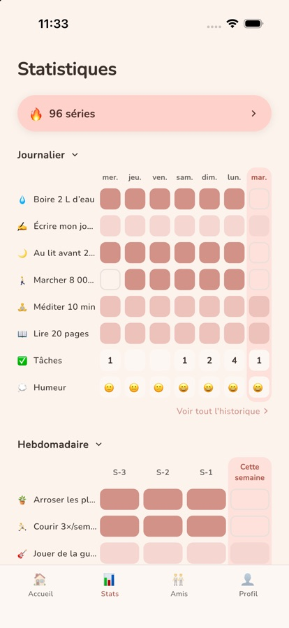

Des petites habitudes,
de grandes séries.
Stidy est une application de suivi d'habitudes et de gestion de tâches : une to-do list simple, des séries pour rester régulier et des amis pour se motiver ensemble.
Bientôt sur iOS et Android
Habitudes et tâches, au même endroit
Fini la surcharge mentale
Des habitudes prédéfinies ou personnalisées, avec objectifs chiffrés, plus une liste de tâches ponctuelles. Coche-les chaque jour, chaque semaine ou chaque mois et regarde ta série grandir.

Vois ce que tu accomplis
Chaque petit pas compte
Suis tes séries et ton historique d'un coup d'œil, et note ton humeur du jour pour mieux comprendre ce qui t'aide à aller bien.

Avance avec tes amis
Motivez-vous en groupe et partagez vos exploits
Ajoute des amis, crée des groupes, encouragez-vous et gardez le rythme ensemble. Tu choisis ce que tes amis voient : masque une habitude ou un souvenir à tout moment.
Un journal rien qu'à toi
Pose tes pensées, en toute intimité
Écris tes notes en toute intimité : elles sont chiffrées sur nos serveurs.

Doux le jour, apaisant la nuit
Un design qui te ressemble
Plusieurs palettes de couleurs, un mode sombre et une interface apaisante, en français et en anglais.

Questions fréquentes
Stidy est-il gratuit ?
Oui, Stidy propose une version gratuite pour suivre tes habitudes et tes tâches. Un abonnement optionnel « Plus » débloque des fonctionnalités supplémentaires, avec un essai gratuit.
Quelle est la différence entre une habitude et une tâche ?
Une habitude se répète (chaque jour, chaque semaine ou chaque mois) et construit une série. Une tâche est ponctuelle : tu la coches une fois, comme dans une to-do list. Stidy réunit les deux au même endroit.
Faut-il créer un compte pour utiliser Stidy ?
Non. Tu peux commencer tout de suite sans compte, puis relier ton compte à Apple ou Google pour retrouver tes données.
Mes notes et mes habitudes sont-elles privées ?
Tes notes de journal sont chiffrées et tu choisis ce que tes amis voient : tu peux masquer une habitude ou un souvenir à tout moment.
Sur quels téléphones est disponible Stidy ?
Stidy arrive bientôt sur iOS et Android, en français et en anglais.
Ta vie privée d'abord
Tu peux commencer à utiliser Stidy sans créer de compte. Tes notes de journal sont chiffrées, tu choisis ce que tes amis voient, et nous ne vendons aucune donnée. Tout est détaillé dans notre politique de confidentialité.
Une question ?
Écris-nous à ophelie@stidy.app.